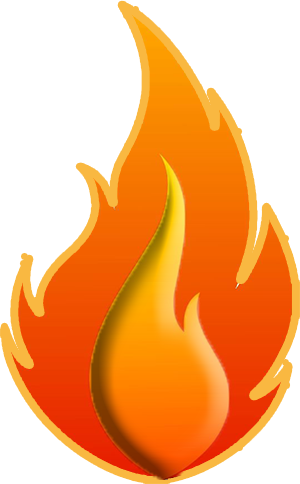

GUIDE DU PRÉSENTATEUR · DOCUMENT INTERNE (NE PAS DÉPOSER SUR LE DRIVE)
Comment présenter Aero-Fire DT
PRÉDICTION · PRÉVENTION · PROTECTION
À lire avant de passer. Pour chaque slide : pourquoi elle est là, ce qu'on voit, ce que tu dis, et ce qu'on peut te demander.
Dans les usines, l'alarme incendie ne voit que la fumée : un spray ou de la poussière la font sonner pour rien, et toute l'usine s'arrête. Aero-Fire DT ajoute des capteurs qui voient aussi les gaz et la chaleur. Une petite IA dit « vrai feu ou fausse alarme ». Et comme dans un moteur d'avion, on ne dit « feu » que si deux signes différents sont d'accord. On lit l'alarme officielle, on ne peut jamais l'éteindre.
| Mot | Ce que ça veut dire |
|---|
| SSI | le système de sécurité incendie officiel de l'usine (l'alarme certifiée, obligatoire) |
| Fausse alarme / nuisance | l'alarme sonne sans feu : spray, poussière, vapeur, échappement d'un chariot |
| Lecture seule | on lit l'état de l'alarme, mais on ne peut rien lui envoyer : impossible de l'éteindre |
| Levée de doute | un agent va vérifier sur place si c'est un vrai feu |
| Double boucle | dans un moteur d'avion, 2 circuits de détection doivent être d'accord pour dire « feu » |
| ECAM | l'écran d'alertes du cockpit Airbus : sombre quand tout va bien, rouge / orange quand il faut agir |
| Feu couvant | un feu qui démarre lentement, avec du gaz et peu de flamme |
| CFD / jumeau 3D | simulation de l'air et de la fumée dans une copie 3D de l'usine |
| Pilote de 90 jours | on installe le système dans une usine pendant 3 mois : l'IA apprend cette usine |
| Kit option 1 | notre boîtier capteur à bas coût : 4 capteurs + 1 puce, ≈ 300–475 TND, pas de caméra |

SLIDE 5 · MODÈLE ÉCONOMIQUE
25 s
Pilote, puis abonnement
POURQUOIMontrer qu'on peut vivre de ce projet, à un prix tunisien.
CE QUE TU DIS« Trois offres : 7 000 dinars pour une PME, 22 000 pour un site classé, 45 000 pour un grand compte, plus un abonnement mensuel. »
« Pour démarrer, il nous faut seulement 9 700 dinars de matériel : l'ingénierie, c'est nous. Rentable dès l'année 2. »
« Pourquoi un abonnement ? » → « Il paie l'apprentissage continu de l'IA sur le site, la maintenance des capteurs et le support 7 jours sur 7. »
| Question | Réponse |
|---|
| « Vous faites à peine mieux qu'un détecteur classique sur les fausses alarmes ? » | « Sur ce hall, oui, une de plus. Notre vraie force : l'alerte précoce, la règle des deux signes, et l'apprentissage de chaque usine : 27 → 4 fausses alarmes. Le pilote mesurera le gain réel. » |
| « Si votre écran dit nuisance, le gardien va attendre ? » | « Non : pendant une alarme, notre écran affiche seulement « appliquez la procédure », sans score. L'IA conseille, la centrale décide. » |
| « Vous avez testé dans une usine tunisienne ? » | « Pas encore : c'est la phase 2, le pilote de 90 jours, avec un installateur agréé et la Protection Civile. » |
| « Quel est le lien avec l'aéronautique ? » | « La double boucle des moteurs, la règle des 60 secondes des soutes, les essais de fumée de la FAA, l'analyse de sécurité ARP4761 et l'écran ECAM d'Airbus. » |
| « Pourquoi pas une caméra / YOLO ? » | « Nos données sont des mesures de capteurs, pas des images. Et sans caméra : moins cher, et pas de problème de vie privée. » |
 30 s
30 s